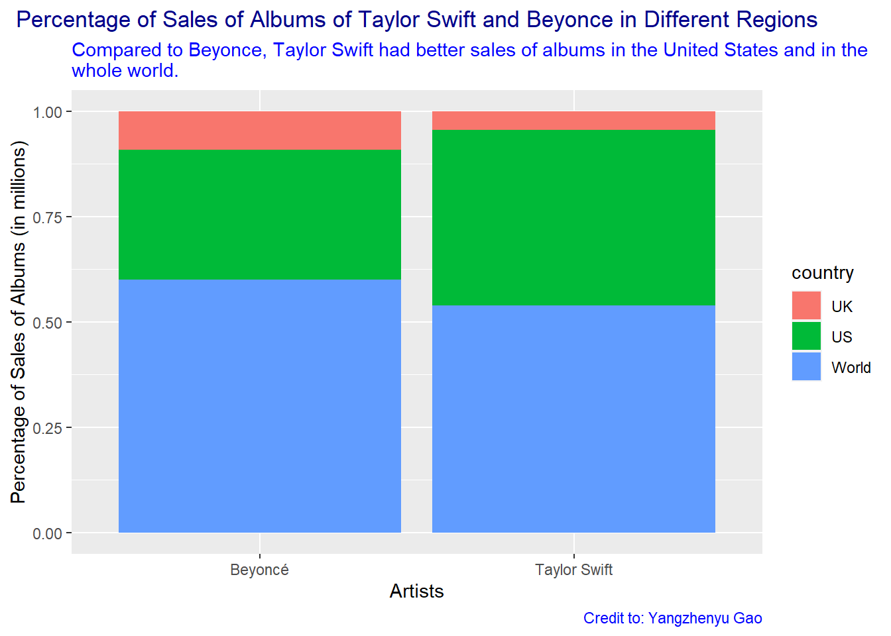
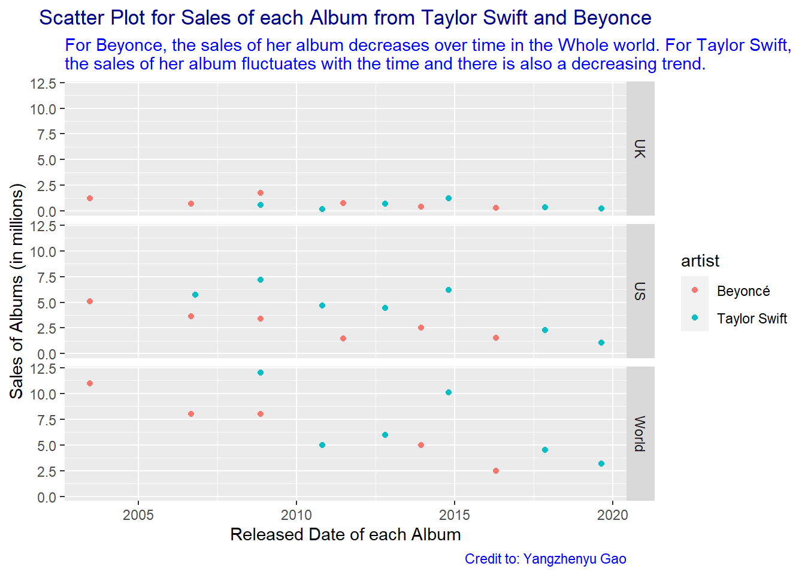
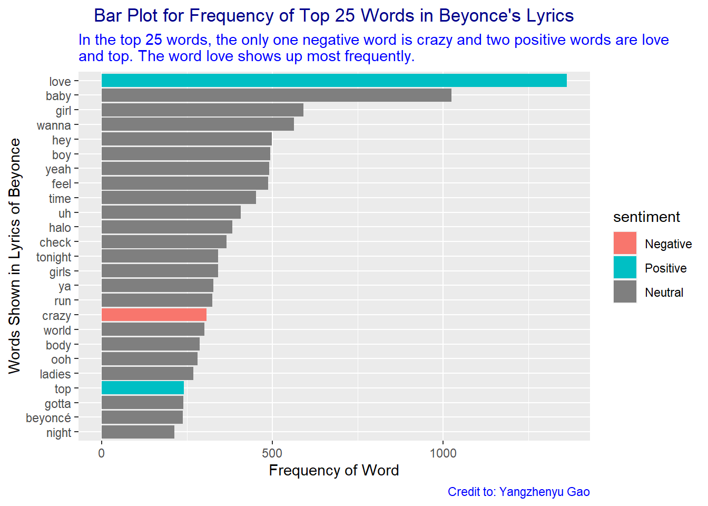
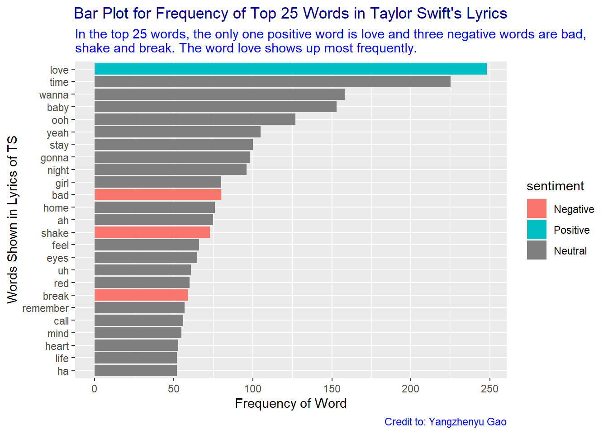

The datasets for the analysis here comes from TidyTuesday.
Pay Attention
TidyTuesday is a weekly podcast and community activity brought to you by the R4DS Online Learning Community. Its goal is to help R learners learn in real-world contexts.
Let’s dive into the album sales and lyrics from these two artists to figure out their impact on the world.(n.d.)
The difference of total album sales between two artists.
Here we discuss the influence of two artists by calculating their total album sales.
Restricted Location
We only focus on the album sales in the US, UK and the whole world.
#remove things like (US)[51] and create a column called released that is a Date class.mysales <- salesmoved_pattern <-"\\(.+\\)\\[.+\\]"target_pattern <-grep(moved_pattern, mysales$released)mysales$released[target_pattern] <-str_sub(mysales$released[target_pattern], start =1, end =unlist(gregexpr("\\(", mysales$released[target_pattern]))-1)mysales$released <-mdy(mysales$released)#create a factor called country, Transform the sales and filter the data frame.mysales$country <-fct_collapse(mysales$country, "World"=c("WW", "World"), "FR"=c("FR", "FRA"))mysales$sales <- mysales$sales/1000000mysales <-rename(mysales, sales_in_millions = sales)mysales_restricted_in_UK_US_World <- mysales %>%filter(country %in%c("World", "UK", "US"))#Calculate the total album sales for each artist and for each country.my_total_sales_restricted_in_UK_US_World <- mysales_restricted_in_UK_US_World %>%group_by(artist, country) %>%summarise(total_sales_in_millions =sum(sales_in_millions), .groups ='drop')(my_total_sales_restricted_in_UK_US_World)
# A tibble: 6 × 3
artist country total_sales_in_millions
<chr> <fct> <dbl>
1 Beyoncé UK 5.24
2 Beyoncé US 17.7
3 Beyoncé World 34.5
4 Taylor Swift UK 3.32
5 Taylor Swift US 31.7
6 Taylor Swift World 40.8
#create a percent stacked barchart.my_total_sales_restricted_in_UK_US_World %>%ggplot(aes(x = artist, y = total_sales_in_millions, fill = country)) +geom_bar(position="fill", stat ="identity") +labs(x ="Artists", y ="Percentage of Sales of Albums (in millions)", title ="Percentage of Sales of Albums of Taylor Swift and Beyonce in Different Regions", subtitle ="Compared to Beyonce, Taylor Swift had better sales of albums in the United States and in the \nwhole world.",caption ="Credit to: Yangzhenyu Gao") +theme(plot.title =element_text(color ="dark blue", hjust =0.5),plot.caption =element_text(color ="blue"),plot.subtitle =element_text(color ="blue"))

Conclusion: Compared to Beyonce, Taylor Swift had better sales of albums in the United States and in the whole world. The result indicates that Taylor Swift has better influence on the world from the perspective of album sales.
The trend of sales of albums from two artists.
#Create a scatter plot of sales of albums along the y-axis by the released date for each album along the x-axis.mysales_restricted_in_UK_US_World %>%ggplot(aes(x = released, y = sales_in_millions, col = artist)) +geom_point() +facet_grid(rows =vars(country)) +labs(x ="Released Date of each Album", y ="Sales of Albums (in millions)", title ="Scatter Plot for Sales of each Album from Taylor Swift and Beyonce", subtitle ="For Beyonce, the sales of her album decreases over time in the Whole world. For Taylor Swift, \nthe sales of her album fluctuates with the time and there is also a decreasing trend.",caption ="Credit to: Yangzhenyu Gao") +theme(plot.title =element_text(color ="dark blue", hjust =0.5),plot.caption =element_text(color ="blue"),plot.subtitle =element_text(color ="blue"))

Conclusion: For Beyonce, the sales of her album decreases over time in the Whole world. For Taylor Swift, the sales of her album fluctuates with the time and there is also a mild decreasing trend. The result indicates that the impact of Taylor Swift and beyonce both decreases and the decreasing trend of beyonce is stronger.
Frequency of positive, negative and neutral words in lyrics from two artists.
#create a column called line with one line containing the character string for each line of Taylor Swift’s songs.my_ts_lyrics_lines <- ts_lyrics %>%unnest_tokens(output = line, input =Lyrics, token ="lines")#Calculate the total number for each word in the lyrics.my_b_lyrics_words <- b_lyrics %>%unnest_tokens(output = word, input =line, token ="words") %>%anti_join(stop_words, by ="word") %>%count(word, sort =TRUE) %>%left_join(get_sentiments("bing"), by ="word") %>%head(n=25)#Create a bar plot with the top words on the y-axis and the frequency of each word on the x-axis. my_b_lyrics_words %>%mutate(word =fct_reorder(word, n)) %>%ggplot(aes(x = n, y = word, fill = sentiment))+geom_col() +labs(x ="Frequency of Word", y ="Words Shown in Lyrics of Beyonce", title ="Bar Plot for Frequency of Top 25 Words in Beyonce's Lyrics", subtitle ="In the top 25 words, the only one negative word is crazy and two positive words are love\nand top. The word love shows up most frequently.",caption ="Credit to: Yangzhenyu Gao") +theme(plot.title =element_text(color ="dark blue", hjust =0.5),plot.caption =element_text(color ="blue"),plot.subtitle =element_text(color ="blue")) +scale_fill_discrete(labels=c("Negative", "Positive", "Neutral"))

#Calculate the total number for each word in the lyrics.my_ts_lyrics_words <- my_ts_lyrics_lines %>%unnest_tokens(output = word, input =line, token ="words") %>%anti_join(stop_words, by ="word") %>%count(word, sort =TRUE) %>%left_join(get_sentiments("bing"), by ="word") %>%head(n=25)#Create a bar plot with the top words on the y-axis and the frequency of each word on the x-axis. my_ts_lyrics_words %>%mutate(word =fct_reorder(word, n)) %>%ggplot(aes(x = n, y = word, fill = sentiment))+geom_col() +labs(x ="Frequency of Word", y ="Words Shown in Lyrics of TS", title ="Bar Plot for Frequency of Top 25 Words in Taylor Swift's Lyrics", subtitle ="In the top 25 words, the only one positive word is love and three negative words are bad,\nshake and break. The word love shows up most frequently.",caption ="Credit to: Yangzhenyu Gao") +theme(plot.title =element_text(color ="dark blue", hjust =0.5),plot.caption =element_text(color ="blue"),plot.subtitle =element_text(color ="blue")) +scale_fill_discrete(labels=c("Negative", "Positive", "Neutral"))

Conclusion: The lyrics from Beyonce and Taylor Swift both contain many neutral words and positive words, which is a great sign that those songs can heal people.
Conclusion
Taylor Swift has greater influence around the world nowadays.
List of my functions
From dplyr or tidyr: 1.rename 2.filter 3.group_by 4.summarise 5.anti_join 6.left_join 7.mutate
From ggplot2: 1.geom_col 2.geom_point 3.geom_bar 4.facet_grid